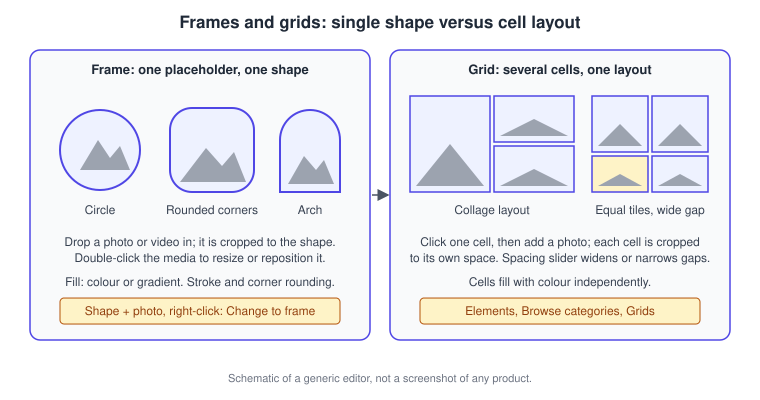
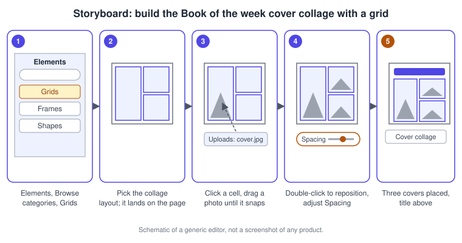
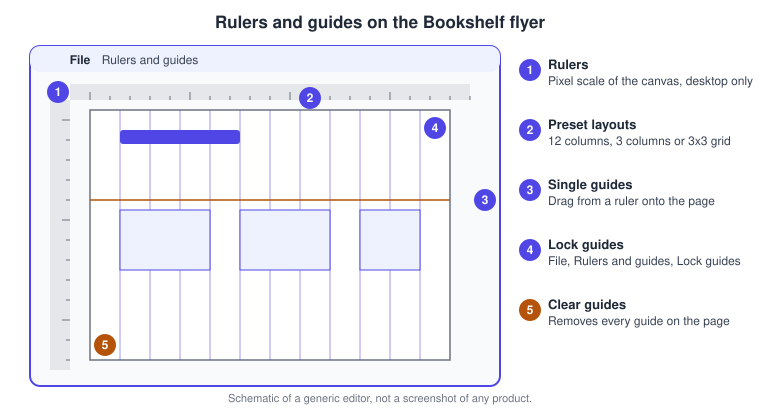
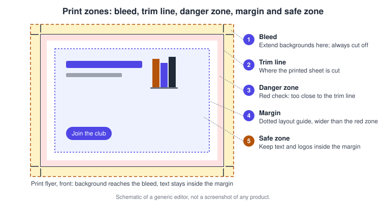
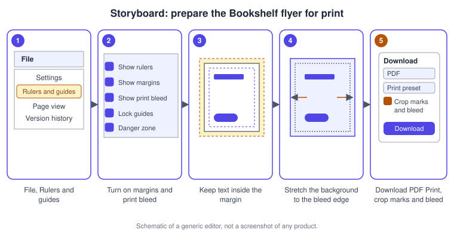

Frames, Grids, Guides and Print Layout
|
This content was generated with the assistance of AI and should be verified against the official documentation before being relied on in production. |
This page was checked against the official Canva Help Center on 2026-11-07. It covers the layout tools of the Canva editor (web, desktop app and, where noted, the mobile apps): frames and grids that crop photos into shapes and collages, rulers and guides that align elements, margins, bleed and crop marks that prepare a design for print, custom page sizes and orientation, and automatic page numbers. Frames, grids, guides, margins and page numbers are editing features of the editor and are not tied to a single plan, so they work on Free, Pro, Business, Enterprise, Education and Nonprofits accounts; individual frames, graphics and photos in the Elements library can be paid content, and resizing a design (Magic Resize) is limited to paid and education plans, as explained below. None of the features on this page is an AI tier feature, apart from the fact that each use of Magic Resize counts against the monthly AI usage limit. Everything described is generally available; prices are not repeated here and are published at https://www.canva.com/pricing/.
The running example is Bookshelf, the book catalogue and reading-list app designed in the Figma sub-section. Here its launch campaign needs a "Book of the week" cover collage for social media and a printed flyer for the book-club meetup. The collage is built with a grid, the flyer is aligned with guides and prepared with margins, bleed and crop marks.
Canva moves icons and labels between releases, and the menus differ slightly between the full editor, the editor embedded in the homepage and the mobile apps, so locations are named in words and the drawings are schematic sketches of a generic editor, not screenshots. The editor itself is introduced on Editor Tour, and shortcuts are collected on Keyboard Shortcuts and Quick Actions.
Frames versus grids
Both are elements, so both live in the Elements tab of the side panel under Browse categories, and both exist to crop photos or videos into a layout. They differ in scope.
| Frame | Grid | |
|---|---|---|
What it is |
A placeholder in one shape (circle, rounded square, arch and many more) |
A layout of several cells that already form a composition |
Holds |
One image or video; only images and videos can be dropped in |
One image or video per cell |
Find it |
Elements, Browse categories, Frames, or search for a shape |
Elements, Browse categories, Grids |
Fill without media |
Solid colour or gradient from the Color tile |
Each cell fills with colour on its own |
Border |
Some frames have a stroke; use Stroke color and Stroke style |
Not described in the article |
Corners |
Corner rounding slider or number |
Not described in the article |
Spacing |
Not applicable |
Spacing slider widens or narrows the gaps between cells |
Replace media |
Replace on the toolbar |
Drag new media over the cell |

Frames in detail
To add a frame, open Elements, choose Frames under Browse categories and select one, or type a description in Search elements and press Enter. To fill it, select the frame and drag a photo or video from Uploads, Elements or Projects until it snaps into place. Smart Crop can speed up cropping inside a frame. With a frame selected, Replace on the editor toolbar swaps the media, and this option appears only for frames: regular shapes and graphics do not show it.
To adjust the picture inside the frame, double-click it, drag a white circle handle at a corner to resize and drag the picture itself to reposition it, then select Done. A frame without media can be filled from the Color tile with a suggested colour, a new colour or a gradient. Frames that have editable borders show several colour tiles; use Stroke color, or Stroke style to set the weight and style of a border that is not yet visible. Corner rounding on the toolbar takes a slider or a number.
Convert a shape into a frame
Any eligible shape can become a frame. Add the shape and the photo, select both (drag across them or hold Shift while clicking), right-click and choose Change to frame; the media fits into the shape automatically, and Detach image on the right-click menu separates them again. The option appears for basic shapes, AI-generated shapes and drawn shapes that have a single visible outline. It does not appear for graphics, stickers, photos, lines, tables, charts, multi-part shapes with several outlines, sticky notes, repeating or patterned shapes, existing frames, or shapes that already contain media. Hand-drawn frames are among the recent additions listed on Drawing and the Tools Tab.
Grids in detail
Add a grid from Elements, Browse categories, Grids. Click the grid cell you want to fill, open Photos or Videos in the side panel (if you do not see them, select Apps first) or Uploads for your own media, and drag the picture over the cell until it snaps inside. Filters, effects and transparency can then be applied to the added photo. Resize and reposition media exactly as in a frame: double-click, drag a corner handle or the photo, then Done. Select a cell and use the Color tile to fill it, or select the whole grid and use Spacing on the toolbar above the editor to drag the gap between cells wider or narrower.
Source: Canva Help Center: Use grids
Desktop and mobile
The Help Center gives the same steps for desktop and mobile for adding frames and grids, filling media, resizing and repositioning, colour, corner rounding, spacing and converting shapes. Right-click steps become long-press or the More menu on a phone. Duplicating an element to repeat a frame follows the general element rules: right-click and choose Duplicate, or press Command + D on macOS and Ctrl + D on Windows, with Shift to select several.
Procedure: build the Book of the week cover collage
-
Open the Bookshelf Book of the Week Instagram post.
-
In the side panel select Elements, then under Browse categories select Grids.
-
Choose a collage layout with one tall cell and two small cells; it is added to the page.
-
Click the tall cell, open Uploads and drag the cover of the featured book until it snaps into place.
-
Repeat for the two small cells with the covers of the runners-up.
-
Double-click a cover to reposition it so the title stays visible, and select Done.
-
Select the grid and drag the Spacing slider until the gaps match the brand style.
-
Select a cell without media and use the Color tile to fill it with a Bookshelf brand colour if you prefer a solid tile.

Source: Canva Help Center: Use grids
Rulers and guides
Rulers and guides help you place elements precisely. Open File, then Rulers and guides, and choose Show rulers and guides. Rulers appear along the top and left of the canvas, measured in the design’s own unit (pixel designs show pixel rulers), and they reflect the canvas size, not the final physical product: when you select a product in the Print panel Canva scales the design to fit but the rulers do not change. A gray highlight on the rulers shows the exact position of an element you move. Rulers are available only on a computer, not on mobile, and some people do not see them because of the editor version, the device or the design template; switching to a desktop browser or an updated template is the suggested fix.

Guides come in two forms.
-
Preset or custom page guides: choose File, Rulers and guides, Add guides, then a preset (12 columns, 3 columns or 3x3 Grid) or Custom, and select Add guides. Any guides already on the page are replaced when a new layout is applied.
-
Individual guides: drag from the top ruler for a horizontal guide or from the side ruler for a vertical one, or use Add horizontal guide and Add vertical guide in the same menu.
Preset and custom guides are locked by default to prevent accidental edits; untick or tick Lock guides under Rulers and guides to change that. To remove them choose Clear guides, or drag an unlocked guide off the page. In a Whiteboard the equivalent background aid is the dot grid, which you hide by unticking Show dot grid in the same menu. The shortcuts listed on the Help Center keyboard page for macOS are Shift + R to show rulers and guides and Option + Command + ; to lock guides; the article shows the Windows keys on its Windows tab.
Guides are not Figma layout grids
A reader coming from Figma will recognise these as the counterpart of the layout guides described on Masks, Constraints and Layout Guides, but Canva’s guides are plain lines with no constraints or auto layout: nothing responds when you resize. The design principles behind column grids, alignment and spacing are covered once, on the Figma UX process page, and apply unchanged here.
Print layout: margins, safe zone, bleed and crop marks
When something will be printed, the Help Center asks you to turn on margins, bleed and crop marks while designing. These aids are not available in Canva Docs, and the sizes of margin, bleed and crop marks cannot be changed because they follow Canva’s print specifications. The article lists the zones from the centre to the edge.
| Zone | Meaning |
|---|---|
Margin |
A layout guide for balanced design; a border of broken lines when Show margins is on |
Safe zone |
The area inside your margins; keep text and logos here so they are always protected |
Danger zone (red zone) |
Canva’s live print check: red means the element is close enough to the trim line to be cut, even if it is within the margins |
Trim line |
Where the design is cut after printing |
Bleed |
The strip just past the trim line; extend backgrounds here, not text, because it is always cut off |

Margins and the danger zone
Show margins from File, Rulers and guides, Show margins. Margins are a design-time guide and are not the same thing as the danger zone shown later in proofing; Canva’s margin guides are wider than the danger zone, so keeping content inside them keeps it out of the red. Show margins may be missing from some document types or older templates; start from a newer format or a blank design. Canva does not support automatic custom margins, but you can simulate them with guides. The Contextual Danger Zone highlights the whole danger area in red when text or elements come too close to the edge; turn it on or off with File, Settings, Show danger zone detection (or under Rulers and guides if it is not in Settings). It is aimed at designs made for Canva Print.
Bleed
Bleed prevents white borders after trimming. By default Canva adds 0.125 inches (3.175 mm) on all sides for products that are trimmed; it does not apply to products where ink does not reach the edge, such as printed envelopes, apparel or drinkware. The article’s example is an A4 design with bleed exporting at about 222 mm by 309 mm instead of the 216 mm by 303 mm printable area. Show it with File, Rulers and guides, Show print bleed; a dashed border appears near the edges and cannot be adjusted. If you see white gaps, stretch the background so it covers them, and stretch other elements you do not mind being cut. If the design seems unchanged that is normal, because Canva slightly reduces the visible content to account for the bleed. When printing outside Canva Print, ask your print provider for its bleed requirement.
Crop marks
Crop marks show where to trim. They exist only in exported PDFs and not inside the editor, and their size is fixed. Add bleed first, then choose Share, Download, file type PDF, preset Print, open Advanced settings, turn on Crop marks and bleed (off by default) and select Download (or Pay and download). Colour handling and the other PDF options are covered on Downloading and File Formats, and ordering from Canva Print on Print and Mockups. Canva may be unable to check your design before it goes to print, so use CMYK colours and proof your designs before ordering.
Procedure: prepare the Bookshelf flyer for print
-
Open the Bookshelf Meetup Flyer design.
-
Choose File, then Rulers and guides.
-
Select Show rulers and guides, then Show margins and Show print bleed from the same menu.
-
Use Add guides with the 3 columns preset to line up the title, the cover and the call to action, or drag a guide from the ruler for a single alignment line.
-
Move the title, the QR code and the meetup details inside the margin. If the red danger zone appears, move the element inward.
-
Select the background and stretch it to the dashed bleed border so no white strip remains.
-
Choose Share, Download, PDF, preset Print, then open Advanced settings and turn on Crop marks and bleed.
-
Select Download and check the PDF for crop marks.

Page sizes and orientation
A design starts at the size of its design type (an Instagram post, a flyer, a presentation). To change it later use Resize in the editor menu bar: pick a suggested size, browse by category, select several sizes at once or choose Custom size, where you can lock or unlock the aspect ratio. Choose which pages to resize, then Copy & resize (the copy is saved beside the original, and several sizes go into a new folder) or Resize this design. A single page can be resized from its Edit panel without affecting the others. Resize canvas to Selection on the right-click menu shrinks the page to the bounding box of the selected elements. Magic Resize is not supported in Canva Docs, Resize canvas to Selection is not offered in Websites, Docs or Sheets, and each use of Magic Resize counts against the monthly AI usage limit.
| Limit | Value in the Help Center article |
|---|---|
Minimum dimensions |
40 x 40 px |
Maximum dimensions |
8000 x 3125 px |
Designs per bulk action |
Up to 50 designs at once |
New sizes per design |
Up to 5 |
Total resized outputs per bulk action |
250 |
The article lists Pro, Business, Enterprise, Education, Higher education, Nonprofits and Teams for resizing; Teams is kept only for existing accounts since Canva Business replaced it for new customers on 2025-10-30, so on a new account read "Business". The separate orientation article still names Pro, Teams, Education and Nonprofits and says that changing page orientation is not directly supported: swap the width and height in Custom size and choose Copy & resize or Resize. To undo a direct resize use File, Version history and restore the earlier autosaved version; that works only if you resized the design itself and did not make a copy. If a size is outside the limits, enter the target in Custom size, lock the aspect ratio, bring one value inside the limits and download the PNG up to 3.125 times its size.
Designs that carry a bleed are exported larger than the page size you see, which is why the bleed steps above come before downloading. Resizing the Bookshelf post into a story, a LinkedIn banner and a YouTube thumbnail is the campaign use of Magic Resize and is treated on Social Media and Content Planner.
Automatic page numbers
Page numbers update by themselves when you add, delete, hide or move pages. They are not supported in Whiteboards, Sheets, Docs and Websites. Open the side panel Text tab, under Dynamic text select Page numbers, choose a format (Numbers only, Page + number, or Page X of Y), choose Show numbers on which pages, and select Apply properties to all pages. To style them, select a page number and use the toolbar for font, colour, size, effects and position (brand fonts apply), then choose Apply properties to all pages again to copy that style. Delete one number from the floating toolbar, or use Remove all page numbers in the same Dynamic text panel. For the Bookshelf launch deck, "Page X of Y" in the corner keeps the meetup audience oriented.
Pitfalls
-
Placing text in the bleed or outside the margin; text there is cut off or looks cramped.
-
Assuming a frame accepts a graphic: only images and videos fit, and sticker or graphic elements cannot be converted.
-
Looking for crop marks in the editor; they appear only in the exported PDF.
-
Turning on bleed and then not extending the background, which leaves white edges after trimming.
-
Applying a new guide preset and losing the guides you drew by hand, because presets replace existing guides.
-
Searching for Rulers on a phone; they are desktop only.
What changed since the older guides
Both older guides describe frames, grids, guides and margins as separate editor features. These features still exist, but their entry points moved with the editor redesign: guides, rulers, margins and print bleed now share the Rulers and guides entry of the File menu (checked 2026-11-07), and the Danger zone detection setting and the Contextual Danger Zone for Canva Print are newer than either book. Page orientation is still changed by swapping width and height, and Teams is now Business for new customers (2025-10-30). All of these items are collected on What Changed Since Older Guides.